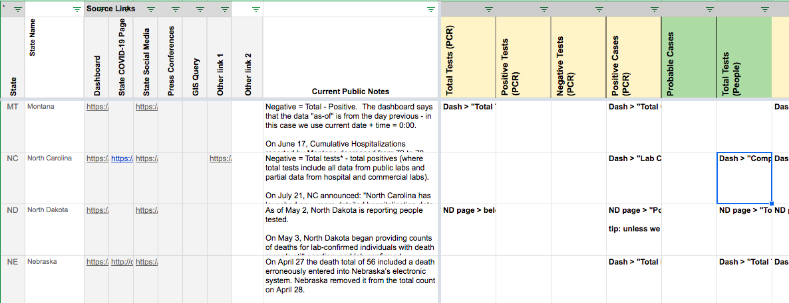

#1138: [NC] Patch 03/06 timestamp
Issue number 1138
hmhoffman opened this issue on April 1, 2021, 6:29 AM PDT
State: NC
Dates affected: 03/06/21
Describe the issue: On March 6, 2021, we incorrectly entered North Carolina's timestamp as 03/02/21 11:35 when it should have been 03/06/21 11:35. We are correcting this error in our historical data.
Comments
#1138: [NC] Patch 03/06 timestamp
Issue number 1138
hmhoffman opened this issue on April 1, 2021, 6:29 AM PDT
State: NC
Dates affected: 03/06/21
Describe the issue: On March 6, 2021, we incorrectly entered North Carolina's timestamp as 03/02/21 11:35 when it should have been 03/06/21 11:35. We are correcting this error in our historical data.
Comments
Rows edited: 1 NC 2021-03-06 lastUpdateTime: 2021-03-06 16:35:00+00:00 (was 2021-03-02 16:35:00+00:00)
#1122: [NC] Clear Negative (people or cases)
Issue number 1122
karaschechtman opened this issue on March 3, 2021, 1:47 PM PST
Labels Data quality
State or US: NC
Describe the problem We are clearing history of Negative (people or cases) in NC. This number mixes units, but we kept it because we relied on it for totalTestResults. Now, with totalTestResults drawn from totalTestsViral, we no longer need the negatives field to be filled.
Link to data source Provide links to original data sources that we can refer to, like a state COVID website.
Comments
#1122: [NC] Clear Negative (people or cases)
Issue number 1122
karaschechtman opened this issue on March 3, 2021, 1:47 PM PST
Labels Data quality
State or US: NC
Describe the problem We are clearing history of Negative (people or cases) in NC. This number mixes units, but we kept it because we relied on it for totalTestResults. Now, with totalTestResults drawn from totalTestsViral, we no longer need the negatives field to be filled.
Link to data source Provide links to original data sources that we can refer to, like a state COVID website.
Comments
#1119: [NC] backfill total tests, and adjust PCR testing based on PCR-only testing numbers from the state
Issue number 1119
space-buzzer opened this issue on March 2, 2021, 12:04 PM PST
Labels Data quality
Target Date: Backfilling tests from March-17th to May-17th, 2020. Updating the time series with the separated PCR (from antigen) tests starting on September 22th, 2020 -- this is when the state started reporting separate PCR and antigen testing.
Source for testing data: https://covid19.ncdhhs.gov/dashboard/data-behind-dashboards "Daily Testing Metrics" tab Molecular data only = "Molecular Test"
Comments
We carried a source note and accidentally used lumped at the topline by mistake -- fixing Changes (7).txt
#1119: [NC] backfill total tests, and adjust PCR testing based on PCR-only testing numbers from the state
Issue number 1119
space-buzzer opened this issue on March 2, 2021, 12:04 PM PST
Labels Data quality
Target Date: Backfilling tests from March-17th to May-17th, 2020. Updating the time series with the separated PCR (from antigen) tests starting on September 22th, 2020 -- this is when the state started reporting separate PCR and antigen testing.
Source for testing data: https://covid19.ncdhhs.gov/dashboard/data-behind-dashboards "Daily Testing Metrics" tab Molecular data only = "Molecular Test"
Comments
We carried a source note and accidentally used lumped at the topline by mistake -- fixing Changes (7).txt
#869: [NC] Patching probable deaths for 9/26
Issue number 869
karaschechtman opened this issue on September 27, 2020, 12:59 PM PDT
Labels Data quality
State or US: NC
Describe the problem NC added probables 9/26 but we did not break out our confirmed and probable capture. We should record the breakdown.
Link to data source

Comments
Before
After

#811: [NC] Backfill NCDHHS historical data
Issue number 811
vlucent opened this issue on September 3, 2020, 7:09 AM PDT
Labels Data quality stale
North Carolina
As you are aware, NC announced a major correction in their testing data on 8/12.
The error reduces NCDHHS’s official count of cumulative tests performed from 2,044,727 to 1,823,283. It did not impact the case count total or the percent positive calculation that NCDHHS reports. Going back to the beginning of the reporting error, the data will be updated to reflect the accurate number of tests performed.
The NCDHHS data does appear to be updated while the COVID19Tracking project data has not, which still records a negative test change for that day, resulting in awkward 7-day average plots:

Comments
This issue has been automatically marked as stale because it has not had recent activity. It will be closed if no further activity occurs. Thank you for your contributions!
This issue has been closed because it was stale for 15 days, and there was no further activity on it for 10 days. You can feel free to re-open it if the issue is important, and label it as "not stale."
#772: [NC] Total Tests (PCR) has no data before 5/13
Issue number 772
muamichali opened this issue on August 17, 2020, 7:47 PM PDT
Labels Data quality not stale
State or US: North Caroline
Describe the problem
- Before 5/13 there are not values for
Total Tests (PCR) - On 5/17 there is no value for
Total Tests (PCR)
Link to data source Provide links to original data sources that we can refer to, like a state COVID website.
Comments
This was addressed by https://github.com/COVID19Tracking/issues/issues/1119. Closing ticket. 🎉
#759: [NC] CTP Reporting Specimens Results in Total PCR Tests (People) Instead of Total Tests (PCR)
Issue number 759
jesseandersonumd opened this issue on August 13, 2020, 7:25 AM PDT
Labels Data quality
State: NC
Dates impacted: 5/13 - 8/12
Issue: Upon further outreach and review of the document linked in sources, we have updated our understanding of how NC reports total test results. NC's total tests include results from all tests administered for one person and have reported that the unit for total tests is specimens. Therefore, we should copy over all values from Total PCR Tests (People) to Total Tests (PCR) and report all values for total tests in Total Tests (PCR) from here on out.
Sources: https://www.ncdhhs.gov/news/press-releases/ncdhhs-corrects-covid-19-testing-totals-after-identifying-labcorp-reporting
Comments
BEFORE:

All values:
1823283 2017498 2001919 1986548 1969766 1939812 1904750 1873668 1854026 1837410 1813510 1786412 1757102 1724924 1691434 1663540 1635476 1613385 1579042 1550297 1523675 1491820 1458997 1423888 1394864 1379143 1343974 1312757 1284637 1254846 1220486 1199575 1176058 1150612 1121811 1096682 1071290 1051846 1036838 1018296 999293 971120 942238 910033 886305 871905 855131 836725 811278 791285 773828 757345 745775 731341 712313 693678 667422 651421 638479 627130 611690 595697 572677 553650 535711 520113 511226 497350 482147 468302 449263 434921 421908 416289 404157 391231 375192 364156 352331 344690 336656 329582 303224 290645 277603 265008 255755 238586 231547 210457 202244
AFTER:

UPDATED in database:

States Matrix before:

States Matrix after:

#658: [NC] Updated Hospitalization Methodology and Curr. ICU
Issue number 658
the-daniel-lin opened this issue on July 23, 2020, 8:17 AM PDT
Labels Backfill Historical Data not stale
State or US: North Carolina
Describe the problem On 7/21, NC announced: "North Carolina has launched new, more detailed hospitalization data to provide more insights into North Carolina's hospital capacity." This slightly altered historical 'current hospitalization' and 'current icu' values until 6/21. On 7/22, we reported the 7/21 numbers for hospitalization and icu. For the backfill, data should be lagged by a day.
Link to data source Slack Thread: https://covid-tracking.slack.com/archives/C010RFJ0ZD3/p1595306262410800
State Site (bar chart below the chart labeled 'Currently Hospitalized COVID-19 Patients' --> select 'Adult ICU Patients') https://covid19.ncdhhs.gov/dashboard/hospitalizations#content-container
Comments
This issue has been automatically marked as stale because it has not had recent activity. It will be closed if no further activity occurs. Thank you for your contributions!
Unfortunately it looks like the state dashboard's Tableau graph only shows one month of data, so we can't get the July statistics at this point unless @space-buzzer knows of a different data source for NC hospitalization data.
#485: NC Test Historicals 5/23
Issue number 485
karaschechtman opened this issue on June 10, 2020, 7:56 AM PDT
Labels Historical Data stale
For North Carolina, the historical data currently lists 26,358 new tests for May 23. According to the state website there were only 8,320 tests on that day.
Comments
This issue has been automatically marked as stale because it has not had recent activity. It will be closed if no further activity occurs. Thank you for your contributions!
This issue has been closed because it was stale for 15 days, and there was no further activity on it for 10 days. You can feel free to re-open it if the issue is important, and label it as "not stale."
#16: NC Data correction
Issue number 16
careeningspace opened this issue on March 17, 2020, 4:43 PM PDT
Labels Data quality
We were temporarily adding Deaths into our total for SC and NV. I cleaned the data up and fixed the formula:


Comments
@careeningspace thanks for the catch! i think this issue can be closed?
Please do!
@careeningspace thanks for the catch! i think this issue can be closed?
Please do!
Rows edited: 1 NC 2021-03-06 lastUpdateTime: 2021-03-06 16:35:00+00:00 (was 2021-03-02 16:35:00+00:00)